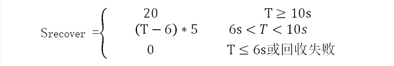
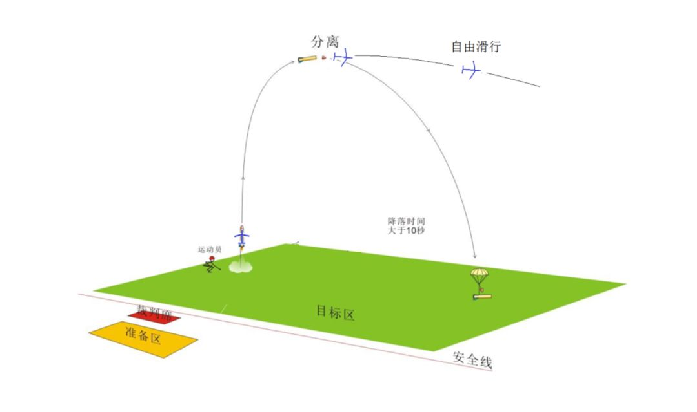

水火箭是寓教于乐、科技含量高,深受广大青少年喜爱的动手、动脑的科普教材。可以让学生直观了解导弹,运载火箭的发射升空,回收的过程,导弹的飞行与飞机的飞行原理及不同点。解释牛顿第一、第二、第三定律（惯性、能量守恒定律、作用与反作用）了解一些基本的空气动力学和飞行力学等方面知识。使广大青少年了解航天科技，热爱航天科技,为国家航天事业培养、造就、输送优秀人才。（全国已多次举办比赛~~）
水火箭是寓教于乐、科技含量高,深受广大青少年喜爱的动手、动脑的科普教材。可以让学生直观了解导弹,运载火箭的发射升空,回收的过程,导弹的飞行与飞机的飞行原理及不同点。解释牛顿第一、第二、第三定律（惯性、能量守恒定律、作用与反作用）了解一些基本的空气动力学和飞行力学等方面知识。使广大青少年了解航天科技，热爱航天科技,为国家航天事业培养、造就、输送优秀人才。（全国已多次举办比赛~~）水火箭运载滑翔机规则
一、任务描述
用模型水火箭运载无动力滑翔机到一定高度，分离后水火箭以伞降方式降落到比赛区内，滑翔机进行无动力自由滑翔飞行，并最终安全着陆。
二、任务要求
2.1 水火箭必须采用竖直起飞方式， 起飞过程中水火箭俯仰角不得小于 60°。
2.2 滑翔机可使用组委会提供的图纸，也可自行改装、加工。
总翼展要求控制在500±50mm。
2.3 发射成功后不得再以任何方式给滑翔机提供动力。
2.4 水火箭发射到一定高度后分离，从分离（箭体和滑翔机分离）到最先下落部分触地，时间不得小于6s。
2.5 水火箭发射后与地面不能有物理连接，分离后箭体单独回收且与滑翔机不得有任何形式物理连接，箭体各部件均需通过伞降方式安全降落。
2.6 水火箭与滑翔机分离必须采用单片机电控分离。单片机程序以及分离方式需自行设计。
2.7 比赛全程中不得使用任何遥控设备操纵水火箭和滑翔机。
2.8 水火箭的制作禁止使用现成水火箭套件，滑翔机禁止购买成品。一经发现按违纪处理。
三、比赛场地
3.1 比赛区：操场
3.1.1 出于安全考虑，除比赛队员以及裁判外，其他人员不得擅自进入比赛区，否则视作违纪。
3.1.2 分离后箭体需降落到比赛区内视作有效降落，否则判定为无效。
3.2 安全区（备赛区）：主操场西侧看台
安全区用于备赛队员准备以及观赛。
四、运动员
每队人数三至四人
五、竞赛方法及成绩评定
5.1 竞赛方法
比赛分为两（三）轮。A类队伍有前2轮比赛机会，B类队伍有三轮比赛机会。比赛开始前，运动员检录并判定各队伍类别（A、B）（已经判定，便不再更改）；比赛开始后参赛队员听从裁判指挥进入赛场，进入赛场需佩戴安全帽。带准备完毕后，听从裁判指示进行发射任务。
5.2 队伍分类
A类队伍：采用单一饮料瓶作为水火箭燃料仓进行比赛的队伍。
B类队伍：采用多饮料瓶组合拼装作为水火箭燃料仓进行比赛的队伍。（例如：二级助推水火箭、双出水口喷水型水火箭等）
5.3 成绩评定
5.3.1 单轮成绩按 S=（Slaunch + Srecovery + Stask * C）* K 计算
Slaunch：发射分，即水火箭成功发射并与滑翔机完成空中分离，视作发射成功。
Srecover：回收分，即水火箭在分离后成功伞降，落在比赛区内，整体未损坏；且从分离时刻开始到水火箭最先着陆部分落地时间T要大于6s（精确到0.1s）。

Stask：任务分，从分离时刻开始，滑翔机在空中停留时间t（s）作为任务分指标（精确到1s）。
若出现一下情况视作意外情况（滑翔机挂在树上、滑翔机超出可视范围），则按从出现意外情况开始停止计时。
（其中t为每队每轮滑翔机留空时间，tmax为所有队伍比赛中留空最长时间）
C：滑翔机着陆后完整度。
K：难度系数。
5.3.2 总成绩Sfinal：取几轮中最高分
注：水火箭在发射、分离过程中有零件脱落，视作发射失败。
水火箭在伞降过程中有零件脱落，或降落伞未展开，视作回收失败。
滑翔机在分立前解体，视为发射失败，且Stask=0。
滑翔机在滑翔过程中解体或有零件脱落，Stask=0。
六、物资
6.1 组委会会提供以下物资
6.1.1 标准比赛用滑翔机图纸以及相应制作所需木材（每队免费提供面积为两倍图纸面积的层板，赛前一周会额外提供一次层板使用机会，届时按每套滑翔机30元收取费用）
6.1.2 标准arduino-UNO板（附连接线）一套、9v电池一个、杜邦线（公转公头、公转母头、母转母头各10根）、12g数字舵机2个。（该部分材料赛后回收，每队需缴纳100元押金，赛后所提供的材料若无损坏则退换，否则按损坏材料价格扣除押金）
6.1.3 水火箭发射胶塞2个（如果需要更多，每个按10元出售）
6.1.4 水火箭发射器（高工309实验室内，借用需登记）
6.2 参赛队员需自行准备以下物资
6.2.1 水火箭所需饮料瓶、降落伞、分离机构所需配件
6.2.2 控制分离所用各类传感器（组委会会有推荐，但鉴于不同组思路不同，故不统一提供）
6.3 关于制作过程中可能涉及到的309实验室切割机以及其他工具的使用
6.3.1 无论使用任何存在安全隐患的工具（如激光切割机、绞磨机），需进行登记并在实验室队员的指导下进行操作，私自操纵者按违纪处理。
6.3.2 在合理请求下，允许参赛队员使用切割机制作水火箭部分所需零件、结构。
七、判罚
以上项目中出现违纪情况的，组委会将根据具体情况对相应队伍进行扣分或禁止比赛等处罚。
八、其他
组委会会进行简单的：C语言培训、滑翔机制作培训、CAD培训、切割机培训、水火箭制作培训、比赛思路介绍等活动。
